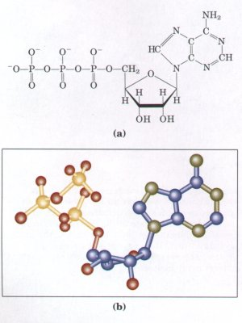
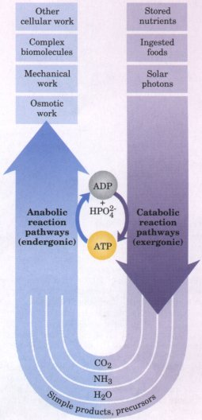
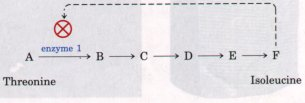

| Cells capture, store, and transport free
energy in a chemical form. Adenosine triphosphate
(ATP) (Fig. 1-12) functions as the major carrier
of chemical energy in all cells. ATP carries energy
between metabolic pathways by serving as the shared
intermediate that couples endergonic reactions to
exergonic ones. The terminal phosphate group of ATP is
transferred to a variety of acceptor molecules, which are
thereby activated for further chemical transformation.
The adenosine diphosphate (ADP) that remains after the
phosphate transfer is recycled to become ATP, at the
expense of either chemical energy (during oxidative
phosphorylation) or solar energy in
photosynthetic cells (by the process of photophosphorylation).
ATP is the major connecting link (the shared
intermediate) between the catabolic and anabolic networks
of enzyme-catalyzed reactions in the cell (Fig. 1-13).  Figure 1-12 (a) Structural formula and (b) balland-stick model for adenosine triphosphate (ATP). The removal of the terminal phosphate of ATP is highly exergonic, and this reaction is coupled to many endergonic reactions in the cell. These linked networks of enzyme-catalyzed reactions are virtually identical in all living organisms. |
 Figure 1-13 ATP is the chemical intermediate linking energy-releasing to energy-requiring cell processes. Its role in the cell is analogous to that of money in an economy: it is "earned/produced" in exergonic reactions and "spent/consumed" in endergonic ones. |
| Not only can living cells simultaneously
synthesize thousands of different kinds of carbohydrate,
fat, protein, and nucleic acid molecules and their
simpler subunits, they can also do so in the precise
proportions required by the cell. For example, when rapid
cell growth occurs, the precursors of proteins and
nucleic acids must be made in large quantities, whereas
in nongrowing cells the requirement for these precursors
is much reduced. Key enzymes in each metabolic pathway
are regulated so that each type of precursor molecule is
produced in a quantity appropriate to the current
requirements of the cell. Consider the pathway shown in
Figure 1-14 (see also Fig. 1-11), which leads to the
synthesis of isoleucine (one of the amino acids, the
monomeric subunits of proteins). If a cell begins to
produce more isoleucine than is needed for protein
synthesis, the unused isoleucine accumulates. High
concentrations of isoleucine inhibit the catalytic
activity of the first enzyme in the pathway, immediately
slowing the production of the amino acid. Such negative
feedback keeps the production and utilization of
each metabolic intermediate in balance. Living cells also regulate the synthesis of their own catalysts, the enzymes. Thus a cell can switch off the synthesis of an enzyme required to make a given product whenever that product is available ready-made in the environment. These self adjusting and self regulating .properties allow cells to maintain themselves in a dynamic steady state, despite fluctuations in the external environment. Living cells are self regulating chemical engines, adjusted for maximum economy. |
 Figure 1-14 Regulation of a biosynthetic pathway by feedback inhibition. In the pathway by which isoleucine is formed in five steps from threonine (Fig. 1-11), the accumulation of the product isoleucine (F) causes inhibition of the first reaction in the pathway by binding to the enzyme catalyzing this reaction and reducing its activity. (The letters A to F represent the corresponding compounds shown in Fig. 1-11. ) |